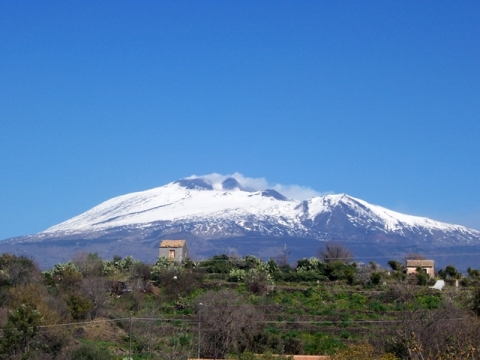

Etna
Etna je aktÃvna sopka nachádzajúca sa na východnom pobrežà SicÃlie. S výškou 3 323 metrov je to najvyÅ¡Å¡ia sopka v Európe. Názov pochádza z rÃmskeho slova Aetna, prevzatého z gréÄtiny - aitho (horieÅ¥), alebo od FeniÄanov - attano. Arabi ju nazývajú Gibel Utlamat (hora ohÅa), skomolenina tohto názvu (Mongibeddu) je tiež lokálne použÃvaná. Sopka bola v antike objektom mnohých mytologických povier: boh vetra Eol v jaskyniach na Etne zajal vetry, Vulkán, boh kováÄov tam mal svoju dielÅu (taktiež ju mal aj na sopke Vulcano)..
